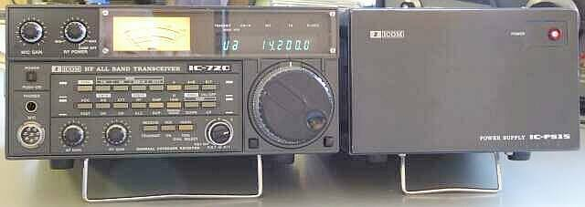
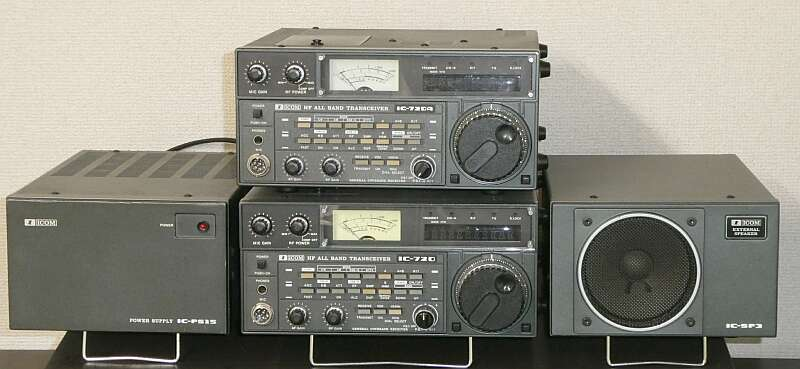
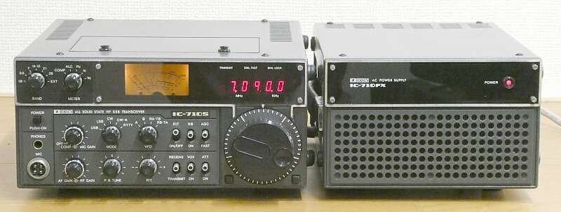
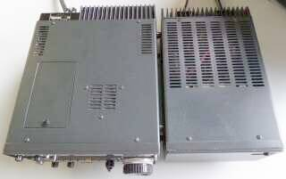
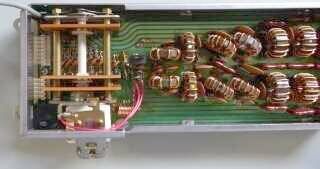
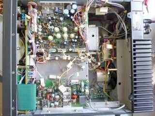

 |
手持ちがあった、当時の純正電源装置（ＩＣ-ＰＳ１５ ２０Ａ定電圧電源）と並べてみました
ご覧のように、本体は、非常にコンパクトですし、３５年という時を感じさせません |
|
 |
| ＩＣ-７２０、後継機IC-７２０Ａ、ＩＣ-ＰＳ１５、ＩＣ-ＳＰ３と一緒に |
|
多分ですが、ゼネラル・カバレッジ受信を可能にした国内最初のトランシーバだと思います
アップ・コンバージョン方式（１ｓｔＩＦ：３９．７ＭＨｚ）を採用した、国産最初のトランシーバではないかと思います（業界の先駆けは、Ｄｒａｋｅ ＴＲ-７）
１９８０年の登場です
８０年当時、ＴＲＩＯは、ＴＳ-１２０／１８０、八重洲は、ＦＴ－１０７の時代で、ゼネカバ（送受とも！）の ＦＴ-ＯＮＥ が発売されたのは、１９８２年です（まだまだ主流は、ファイナルが真空管のマシンという時代 ＴＳ－８２０／ＦＴ－１０１Ｚ等）
アイコムが、ＰＬＬほかデジタル技術の取り入れについては先進的であったことが、この歴史からもよく分かります
このアップ・コンバージョン方式は、その後ＳＤＲ方式の登場（２０１６年１月 ＩＣ-７３００が登場）まで、主流として続きます（今も続いています！）
さて、アイコム（井上電機製作所）のＨＦ参戦は、１９６７年のＩＣ-７００Ｔ／Ｒが最初だったと思います
八重洲ＦＬ-５０／ＦＲ-５０と同じような、高い周波数帯ではＶＦＯの安定度が問題となる、シングル・コンバージョン・タイプのものでした（送信機は、ＶＦＯを内蔵しないところも一緒）
八重洲ＦＬ／ＦＲ-５０との大きな違いは、送信終段／ドライバ・ミキサ以外は、全て半導体でした
７００Ｔは、Ｓ２００１×２本を軽く使って５０Ｗ ドライバ・ミキサは、いずれも１２ＢＹ７Ａ 他は半導体
７００Ｒは、きっとＦＥＴを最初に採用したＨＦ無線機でしょう
半導体の採用についても、アイコムは先駆者と言えます
それから１０年後の１９７７年に、ＩＣ-７１０というこの７２０の先駆けとなったトランシーバを発売しました
オール・ソリッドステートで、当時としては斬新なデザインの、非常にコンパクトな本格的ＨＦトランシーバです
 |
アイコム（井上電機製作所）も、このデザインがお気に入りのようで、Ｖ／ＵＨＦのマシンまで採用されました
同じ型を長く使う･･･その後もこの動きは続きます |
ＨＡＭバンドのみ（ＷＡＲＣバンドなし）対応のマシンでした（パスバンド・チューニングを含むトリプルコンバージョン／ダブルコンバージョン＋）
７２０では、ゼネカバ受信対応と言うことでＡＭモード（送信も可能／ハムバンドのみ）を持っていますが、７１０では、ＳＳＢ／ＣＷ／ＲＴＴＹの３モードでした
ここからが、きっとアイコムのＨＦストーリーの始まりです
ＩＣ-７８５１も、アップコンバージョンのスーパー・へテロダイン方式に違いはありません |
 |
|
本機の大きな特徴？ バンド切替の度に、ガチャガチャとＲＦフィルタを切り替える大きな音がします
ＶＦＯはデジタル・タイプで、ステップ当たり１０／１００Ｈｚに切替が（１ＫＨｚステップの早送りも）可能です |
 |
コンパクトさは、奥行きを見ても・・・
２０Ａ定電圧電源と、ほとんど変わりません
ＩＣ－ＰＳ１５は、たまたま所持していたもので、こちらは見た目も歳相応・・・年期を感じるものです
本機ですが、３５年以上の時間が経過していると思われますが、見た目は非常に綺麗です
でも、何もないはずはありません！
電源を入れると、ガチャガチャと動く、フィルタのバンド切替動作が止まりません（ＳＷを回転させようとギアを叩くのですが、肝心のギアが回ってくれません）
ただただ、ウルサイだけです
この”音”の犯人は、左下写真にあるロータリー・リレーです
今なら、小型の高周波リレー、あるいはダイオードＳＷで対応するところでしょうが、当時としては小型化のためには、この手しかなかったものと思われます（ＩＣ-７１０も同じ手法がとられている）
たちまち修理というか、対策に手を出さざるを得ない状況です |

この写真は、ＲＦフィルタ･ユニットです
いかにもリレー風に左下に見えるのが”音源”です
１動作毎にギアをひとつ送る動作をします
そのギアでバンド切替ＳＷを回すという仕組みです |
|
 |
本体上蓋を開けたところです（向かって左が、フロントパネル側）
３５年という時間の経過が信じられないくらい綺麗です
ホコリや錆びも、ほとんど見あたりません
上写真のフィルタ・ユニットは、リアパネルの左に見える空間に収まっています（左写真では、ポッカリ隙間が空いて見えます）
何かあると保守性は悪い ・・・ 小型化を進めた場合のデメリットです
ＰＬＬほかデジタル技術周りにトラブルが生じると、その修理は大変そうです
本体下側に、変換／ＩＦユニットがあります
ＡＭフィルタ（元々オプション）が装着してありました |
|
|
| 今回の取り組み（修復）内容 |
何が起きているのは、一目瞭然なのですが、解決には少々悩まされました
ロータリー・リレーを単独で動かせば、きちんと切替動作をします
が、コイルに３Ａ位電流が流れます
これはどう見ても過負荷でしょうと、ロータリー･リレー、切替ＳＷ部の清掃とシリコン・グリスの塗布を行いました
コイル電流は２Ａ位まで低減しました（電流制限をかけてテスト）
これでＯＫかなと期待して元に戻すも、きちんとは動きません
時折、ＳＷを回す・・・あとは、無駄にガチャガチャを繰り返す
全く切り替わらなかった当初よりは、僅かに改善・・・程度です
ＳＷしているＴｒを外して、テスターで当たったのでは異常はありません
外部から、ベースに電圧をかけても、きちんと軸がまわせる動きにはなりません、要は力不足です
ギア部を叩いているだけです
コレクタ－エミッタ間を、強制的にショートすれば目的の動作をします
こうなると、やってみることとしては、このＳＷしているＴｒの交換しかありません
一般的なパワーＴｒでは、改善がありません、同じ動きです
ここで少し騙されたというか、認識不足がありました
改めてオリジナル搭載Ｔｒの規格を見て、手持ちの中で唯一あった近い規格のＴｒに交換、サージ保護ダイオードもこの便に交換しました
さて結果は？
きちんと思う動作になりました
リレーコイル部の劣化であるなら、修理不能というところでした
劣化・・・今回は、半導体側にありました、良かった！！
あと気になったのは、ダイヤル表示と実際の周波数の差異・・・・この調整を行っただけで、ほかに問題は見あたらなかったので、スペックをチェック
■受信感度
０．２５μＶ入力で
１４ＭＨｚ帯では、Ｓ／Ｎ１４ｄｂ
２８ＭＨｚ帯で、Ｓ／Ｎ１０ｄｂ が得られました
元のスペックでは、０．２５μＶ入力 Ｓ／Ｎ１０ｄｂ以上 です
余談ながら、先行のＩＣ-７１０のスペックは、０．５μＶ入力で、Ｓ／Ｎ１０ｄｂ 以上 です
■送信パワー
１．９～２１ＭＨｚ帯 １１０Ｗ前後（Ｍａｘ１９Ａ弱）
２８ＭＨｚ帯 ６０Ｗ程度
本機は、ＷＡＲＣバンドに対応しています
電気的には、劣化も見られず、元のスペックどおりの性能が得られています、素晴らしい！
この頃は、１００Ｗ機でも電源容量は２０Ａで足りています！（余談ながら、先行のＩＣ-７１０の純正電源は、定電圧ではありません）
|
| |